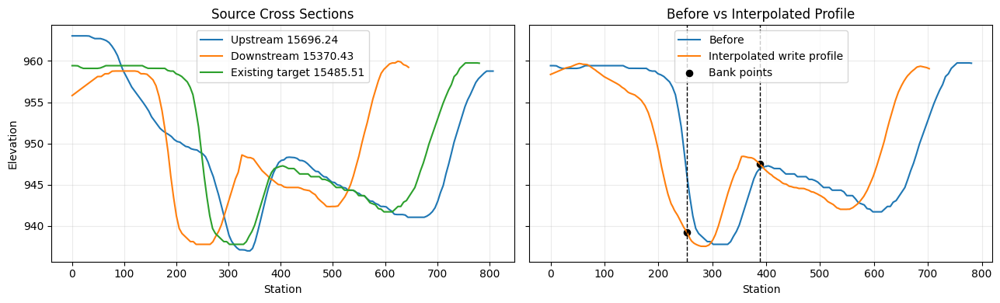
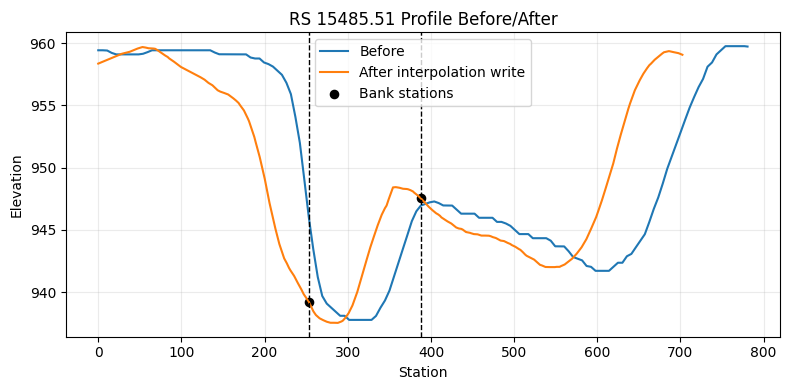

Python
from pathlib import Path
import logging
import matplotlib.pyplot as plt
import pandas as pd
from IPython.display import display
import ras_commander
from ras_commander import RasCmdr, RasExamples, init_ras_project, ras
from ras_commander.geom.GeomCrossSection import GeomCrossSection
logging.getLogger("ras_commander").setLevel(logging.WARNING)
print(f"ras-commander {ras_commander.__version__}")
print(ras_commander.__file__)
Text Only
ras-commander 0.96.1
C:\GH\symphony-workspaces\ras-commander\CLB-306\ras_commander\__init__.py
Local Development¶
For local-source validation, execute this notebook from the repository with PYTHONPATH set to the active checkout and the symphony-dev environment selected. Generated HEC-RAS projects and compute outputs are written outside the repository under H:/Symphony/ras-commander/CLB-306 when that drive is available.
Cross-Section Interpolation Settings¶
This notebook validates the CLB-306 cross-section APIs on a real HEC-RAS example project:
- read neighboring 1D cross sections from a plain-text geometry file
- create reviewable interpolated station/elevation data under the HEC-RAS point limit
- enforce explicit bank stations as exact station/elevation points
- round-trip per-cross-section expansion/contraction coefficients
- run HEC-RAS through
RasCmdr.compute_plan()to validate the edited geometry
Python
preferred_root = Path("H:/Symphony/ras-commander/CLB-306/xs_interpolation_settings")
if Path("H:/").exists():
work_dir = preferred_root
else:
cwd = Path.cwd()
repo_root = cwd if (cwd / "ras_commander").exists() else cwd.parent
work_dir = repo_root / "working" / "CLB-306-xs-interpolation-settings"
work_dir.mkdir(parents=True, exist_ok=True)
project_name = "Muncie"
project_suffix = "clb306_xs_settings"
ras_version = "6.6"
plan_number = "01"
project_path = RasExamples.extract_project(project_name, output_path=work_dir, suffix=project_suffix)
init_ras_project(project_path, ras_version)
plan_row = ras.plan_df.loc[ras.plan_df["plan_number"].eq(plan_number)].iloc[0]
geom_file = Path(plan_row["Geom Path"])
print(f"Project: {project_path}")
print(f"Geometry: {geom_file.name}")
print(f"HEC-RAS: {ras.ras_exe_path}")
display(ras.plan_df[["plan_number", "Plan Title", "Geom File", "Flow File", "flow_type"]])
Text Only
Project: H:\Symphony\ras-commander\CLB-306\xs_interpolation_settings\Muncie_clb306_xs_settings
Geometry: Muncie.g01
HEC-RAS: C:\Program Files (x86)\HEC\HEC-RAS\6.6\Ras.exe
| plan_number | Plan Title | Geom File | Flow File | flow_type | |
|---|---|---|---|---|---|
| 0 | 01 | Unsteady Multi 9-SA run | 01 | 01 | Unsteady |
| 1 | 03 | Unsteady Run with 2D 50ft Grid | 02 | 01 | Unsteady |
| 2 | 04 | Unsteady Run with 2D 50ft User n Value R | 04 | 01 | Unsteady |
Python
river = "White"
reach = "Muncie"
upstream_rs = "15696.24"
target_rs = "15485.51"
downstream_rs = "15370.43"
ratio = (float(upstream_rs) - float(target_rs)) / (float(upstream_rs) - float(downstream_rs))
xs_df = GeomCrossSection.get_cross_sections(geom_file, river=river, reach=reach)
before_profile = GeomCrossSection.get_station_elevation(geom_file, river, reach, target_rs)
before_banks = GeomCrossSection.get_bank_stations(geom_file, river, reach, target_rs)
before_exp_cntr = GeomCrossSection.get_expansion_contraction(geom_file, river, reach, target_rs)
print(f"Interpolation ratio for RS {target_rs}: {ratio:.3f}")
print(f"Target profile points before edit: {len(before_profile)}")
print(f"Target bank stations before edit: {before_banks}")
print(f"Target Exp/Cntr before edit: {before_exp_cntr}")
display(xs_df.head(6))
Text Only
Interpolation ratio for RS 15485.51: 0.647
Target profile points before edit: 93
Target bank stations before edit: (253.16, 387.82)
Target Exp/Cntr before edit: (0.3, 0.1)
| River | Reach | RS | Type | Length_Left | Length_Channel | Length_Right | NodeName | |
|---|---|---|---|---|---|---|---|---|
| 0 | White | Muncie | 15696.24 | 1 | 228.66 | 210.73 | 167.84 | |
| 1 | White | Muncie | 15485.51 | 1 | 121.23 | 115.09 | 103.79 | |
| 2 | White | Muncie | 15370.43 | 1 | 174.81 | 165.14 | 117.82 | |
| 3 | White | Muncie | 15205.29 | 1 | 216.56 | 192.09 | 159.11 | |
| 4 | White | Muncie | 15013.20 | 1 | 98.06 | 95.84 | 84.00 | |
| 5 | White | Muncie | 14917.36 | 1 | 60.31 | 61.12 | 51.13 |
Python
auto_interpolated = GeomCrossSection.interpolate_cross_section(
geom_file,
river,
reach,
upstream_rs,
downstream_rs,
ratio=ratio,
max_points=GeomCrossSection.MAX_XS_POINTS,
interpolated_rs=target_rs,
)
interpolated = GeomCrossSection.interpolate_cross_section(
geom_file,
river,
reach,
upstream_rs,
downstream_rs,
ratio=ratio,
bank_left=before_banks[0],
bank_right=before_banks[1],
max_points=GeomCrossSection.MAX_XS_POINTS,
interpolated_rs=target_rs,
)
review_cols = [
"Station",
"Elevation",
"UpstreamStation",
"DownstreamStation",
"Source",
"IsBankPoint",
"BankLeft",
"BankRight",
]
print(f"Auto-interpolated bank stations: {auto_interpolated['BankLeft'].iloc[0]:.2f}, {auto_interpolated['BankRight'].iloc[0]:.2f}")
print(f"Validation write keeps existing bank stations: {before_banks[0]:.2f}, {before_banks[1]:.2f}")
print(f"Interpolated profile point count: {len(interpolated)} / {GeomCrossSection.MAX_XS_POINTS}")
assert len(interpolated) <= GeomCrossSection.MAX_XS_POINTS
assert set(interpolated.loc[interpolated["IsBankPoint"], "Station"].round(2)) == {round(before_banks[0], 2), round(before_banks[1], 2)}
display(interpolated[review_cols].head(12))
display(interpolated.loc[interpolated["IsBankPoint"], review_cols])
Text Only
Auto-interpolated bank stations: 207.31, 352.21
Validation write keeps existing bank stations: 253.16, 387.82
Interpolated profile point count: 222 / 500
| Station | Elevation | UpstreamStation | DownstreamStation | Source | IsBankPoint | BankLeft | BankRight | |
|---|---|---|---|---|---|---|---|---|
| 0 | 0.000000 | 958.363723 | 0.000000 | 0.000000 | both | False | 253.16 | 387.82 |
| 1 | 22.775259 | 959.004043 | 26.172538 | 20.920000 | downstream | False | 253.16 | 387.82 |
| 2 | 23.669353 | 959.028993 | 27.200000 | 21.741262 | upstream | False | 253.16 | 387.82 |
| 3 | 28.403224 | 959.154027 | 32.640000 | 26.089514 | upstream | False | 253.16 | 387.82 |
| 4 | 33.137095 | 959.226080 | 38.080000 | 30.437766 | upstream | False | 253.16 | 387.82 |
| 5 | 37.870966 | 959.308730 | 43.520000 | 34.786019 | upstream | False | 253.16 | 387.82 |
| 6 | 47.338707 | 959.572928 | 54.400000 | 43.482523 | upstream | False | 253.16 | 387.82 |
| 7 | 52.072578 | 959.669705 | 59.840000 | 47.830776 | upstream | False | 253.16 | 387.82 |
| 8 | 53.138643 | 959.688318 | 61.065086 | 48.810000 | downstream | False | 253.16 | 387.82 |
| 9 | 56.806448 | 959.653126 | 65.280000 | 52.179028 | upstream | False | 253.16 | 387.82 |
| 10 | 60.737654 | 959.586075 | 69.797605 | 55.790000 | downstream | False | 253.16 | 387.82 |
| 11 | 61.540319 | 959.593595 | 70.720000 | 56.527280 | upstream | False | 253.16 | 387.82 |
| Station | Elevation | UpstreamStation | DownstreamStation | Source | IsBankPoint | BankLeft | BankRight | |
|---|---|---|---|---|---|---|---|---|
| 70 | 253.16 | 939.235354 | 290.922691 | 232.537732 | bank | True | 253.16 | 387.82 |
| 114 | 387.82 | 947.543765 | 445.669292 | 356.228407 | bank | True | 253.16 | 387.82 |
Python
upstream_profile = GeomCrossSection.get_station_elevation(geom_file, river, reach, upstream_rs)
downstream_profile = GeomCrossSection.get_station_elevation(geom_file, river, reach, downstream_rs)
fig, axes = plt.subplots(1, 2, figsize=(13, 4), sharey=True)
axes[0].plot(upstream_profile["Station"], upstream_profile["Elevation"], label=f"Upstream {upstream_rs}", linewidth=1.5)
axes[0].plot(downstream_profile["Station"], downstream_profile["Elevation"], label=f"Downstream {downstream_rs}", linewidth=1.5)
axes[0].plot(before_profile["Station"], before_profile["Elevation"], label=f"Existing target {target_rs}", linewidth=1.5)
axes[0].set_title("Source Cross Sections")
axes[0].set_xlabel("Station")
axes[0].set_ylabel("Elevation")
axes[0].legend()
axes[0].grid(True, alpha=0.25)
axes[1].plot(before_profile["Station"], before_profile["Elevation"], label="Before", linewidth=1.5)
axes[1].plot(interpolated["Station"], interpolated["Elevation"], label="Interpolated write profile", linewidth=1.5)
for bank in before_banks:
axes[1].axvline(bank, color="black", linestyle="--", linewidth=1)
axes[1].scatter(
interpolated.loc[interpolated["IsBankPoint"], "Station"],
interpolated.loc[interpolated["IsBankPoint"], "Elevation"],
color="black",
s=35,
label="Bank points",
)
axes[1].set_title("Before vs Interpolated Profile")
axes[1].set_xlabel("Station")
axes[1].legend()
axes[1].grid(True, alpha=0.25)
fig.tight_layout()

Python
profile_backup = GeomCrossSection.set_station_elevation(
geom_file,
river,
reach,
target_rs,
interpolated[["Station", "Elevation"]],
bank_left=before_banks[0],
bank_right=before_banks[1],
create_backup=True,
)
bank_backup = GeomCrossSection.set_bank_stations(
geom_file,
river,
reach,
target_rs,
before_banks[0],
before_banks[1],
create_backup=True,
)
coeff_backup = GeomCrossSection.set_expansion_contraction(
geom_file,
river,
reach,
target_rs,
expansion=0.45,
contraction=0.15,
create_backup=True,
)
after_profile = GeomCrossSection.get_station_elevation(geom_file, river, reach, target_rs)
after_banks = GeomCrossSection.get_bank_stations(geom_file, river, reach, target_rs)
after_exp_cntr = GeomCrossSection.get_expansion_contraction(geom_file, river, reach, target_rs)
for bank in after_banks:
assert after_profile["Station"].sub(bank).abs().min() <= 0.005
assert after_banks == before_banks
assert after_exp_cntr == (0.45, 0.15)
assert len(after_profile) <= GeomCrossSection.MAX_XS_POINTS
summary = pd.DataFrame([
{"Metric": "Profile points", "Before": len(before_profile), "After": len(after_profile)},
{"Metric": "Bank stations", "Before": before_banks, "After": after_banks},
{"Metric": "Exp/Cntr", "Before": before_exp_cntr, "After": after_exp_cntr},
{"Metric": "Profile backup", "Before": "", "After": Path(profile_backup).name},
{"Metric": "Bank backup", "Before": "", "After": Path(bank_backup).name},
{"Metric": "Coefficient backup", "Before": "", "After": Path(coeff_backup).name},
])
display(summary)
| Metric | Before | After | |
|---|---|---|---|
| 0 | Profile points | 93 | 222 |
| 1 | Bank stations | (253.16, 387.82) | (253.16, 387.82) |
| 2 | Exp/Cntr | (0.3, 0.1) | (0.45, 0.15) |
| 3 | Profile backup | Muncie.g01.bak | |
| 4 | Bank backup | Muncie.g01.bak1 | |
| 5 | Coefficient backup | Muncie.g01.bak2 |
Python
fig, ax = plt.subplots(figsize=(8, 4))
ax.plot(before_profile["Station"], before_profile["Elevation"], label="Before", linewidth=1.5)
ax.plot(after_profile["Station"], after_profile["Elevation"], label="After interpolation write", linewidth=1.5)
for bank in after_banks:
ax.axvline(bank, color="black", linestyle="--", linewidth=1)
ax.scatter(
after_profile.loc[after_profile["Station"].isin(after_banks), "Station"],
after_profile.loc[after_profile["Station"].isin(after_banks), "Elevation"],
color="black",
s=35,
label="Bank stations",
)
ax.set_title(f"RS {target_rs} Profile Before/After")
ax.set_xlabel("Station")
ax.set_ylabel("Elevation")
ax.legend()
ax.grid(True, alpha=0.25)
fig.tight_layout()

Python
compute_folder = work_dir / "Muncie_clb306_xs_settings_compute"
compute_result = RasCmdr.compute_plan(
plan_number,
dest_folder=compute_folder,
overwrite_dest=True,
clear_geompre=True,
force_rerun=True,
num_cores=1,
verify=True,
)
print(f"HEC-RAS validation success: {compute_result.success}")
assert compute_result.success
init_ras_project(compute_folder, ras_version)
validation_row = ras.results_df.loc[ras.results_df["plan_number"].eq(plan_number)]
display(validation_row[["plan_number", "completed", "has_errors", "has_warnings", "runtime_complete_process_hours", "hdf_exists", "hdf_path"]])
Text Only
HEC-RAS validation success: True
| plan_number | completed | has_errors | has_warnings | runtime_complete_process_hours | hdf_exists | hdf_path | |
|---|---|---|---|---|---|---|---|
| 0 | 01 | True | False | False | 0.003533 | True | H:\Symphony\ras-commander\CLB-306\xs_interpola... |